Engineering Notebook - Important Systems
RoboHawks | FTC #5741
Creating opportunities for real world engineering and hands-on learning in a safe environment for all students at CVU
Creating opportunities for real world engineering and hands-on learning in a safe environment for all students at CVU
Add to our autonomous driving code to:
Today, I spent some time at Darkstar to write and test a working autonomous OpMode. Since we did not have a full field setup in the shop, I had been testing the code with a scaled-down tile size (10cm instead of 60cm). When I tried everything out on a full field that had marked drop zones, I realized that parts of the original path were incorrect, so I fixed those.
Since the robot was already capable of driving to a drop zone based on the starter stack, my first priority was allowing it to actually drop the wobble. I was able to move the wobble arm as intended, but the sticky-pad claw setup turned out to be basically unusable without a human manually controlling the robot. When driving with the arm collapsed and the wobble in the claw, the wobble would usually fall out. If it managed to stay in, it would remain stuck to the claw when the arm was lowered for delivery.
After that, I slightly modified the path again and added code for the robot to shoot three pre-loaded rings into the high goal. I had to tweak the final firing location a few times to aim accurately, but I eventually found a position where the robot consistently scored on every shot.
Once the arm mechanism has a more workable claw, I will modify the code to utilize it and test autonomous with the actual wobble. If this works out (and I don't see why it shouldn't), we can score 56 points in the autonomous round. If the shooter is accurate enough, I might also try aiming for the power shots instead of the high goal, which could bump the score to 63.
An issue I encountered a few times while testing was TensorFlow detecting a random part of the room as a quad stack when no rings were placed in the starter stack, causing the robot to go to target zone c instead of a. This seemed to be alleviated somewhat by waiting longer for autonomous to initialize and shifting the phone camera upwards (higher above the shooter lip). However, I would like to fix this permanently, either by adding some more constraints on TensorFlow object detection or using a new computer vision model. To make sure we have something working for scrimmages and the competition, I will start with the first fix. The second would definitely be helpful, though, since no well-trained machine learning model should be detecting a quad stack in empty space (and labeling it with 89% certainty!).
With the claw now added to the wobble arm, I was able to finalize and test the Autonomous OpMode this week. I started by adding code to operate the claw and moving the arm all the up before leaving the target zones.
I then diagrammed a formal plan for the autonomous OpMode to check my code's sequence and measurements against.
Initially, the robot had issues with bumping the wall and going back to the wrong launch position. After making a series of tweaks to its path to avoid these issues, it was able to score the full 56 points (deliver wobble goal = 15, shoot 3 rings into the high goal = 3x12, park over launch line = 5) in most runs. However, the ongoing issues with TensorFlow's faulty object detection persisted.
This will not be fully solved until we replace the existing system with OpenCV. However, to reduce detection error for the time being, I have changed the code so that the robot drives about 1/2 of a tile forward and waits 3 seconds before determining the target zone. This gives it a much better view of the rings, and, based on testing results, significantly decreases the frequency of incorrect detections.
Once all of this was finished, I put together a video to demonstrate the results.
There are still several improvements that can still be made to the autonomous code. As I mentioned, a custom-trained OpenCV model will detect rings with significantly more accuracy than the current TensorFlow one. Additionally, using odometry instead of encoder driving will help the robot navigate the field much faster and more precisely, hopefully giving us enough time to deliver a second wobble goal (which is an extra 15 points) and/or hit the power shots (which scores 9 points more than targeting the high goal).
After I was done tuning the position controller today, I copied and edited the AutonDraft OpMode to position the robot with a ControlledDrivetrain rather than wheel encoders. When I tested this code, the robot initially had issues moving its wheels in the right directions and started circling around the field. This turned out to be due to incorrect motor names and threaded tasks running non-sequentially (controlledDrivetrain.isBusy() was called before the thread had finished setPosition()), which I fixed by correcting the names and adding short Time.sleep pauses between synchronous threaded methods.
When I tested it after these changes, position control seemed to function properly; however, the x-coordinates were inverted in my positioning measurements because I measured from the right wall but entered the measurements as positive. I didn't have time to run another test, but I changed the setPosition() code to use inverted x-coordinates by default.
Since position control seems to work much faster and more accurately than using wheel encoders, I'm hoping that our final autonomous OpMode will be able to aim for the powershots instead of the high goal.
This can easily give us up to 9 extra points, so I think it's definitely worthwhile to implement.
Once I go to DarkStar again, I'll test my existing autonomous OpMode and, if it works, start adding code for the powershots. Hopefully, I can finish this before the competition next week.
This weekend, I tested Autonomous v3 at DarkStar. I started by finding exact PowerShot locations for driver control (see Finalized TeleOP Code) and then testing them in autonomous. There were a few runs where the robot could hit some of the targets, but, in general, the accuracy was poor.
In an attempt to fix this, Cailean and I used the odometry logging in DriveV2 to re-adjust the shooting locations. While these locations worked after the robot touched off in driver control, small differences in intial heading resulted in inconsistent autonomous performance.
Ultimately, aiming for the powershots not only resulted in scoring very few points (in most cases), but also took up quite a bit of time, since the robot had to settle at 3 different locations. Shooting for the high goal, on the other hand, took less time and was far more consistent. For those reasons, I decided to go with that approach and (more than) make up the missing 9 points by either delivering a second wobble goal or shooting the starter stack rings.
Since accurately intaking the stack seemed difficult (our intake system usually requires pauses between rings), I started by going for the second wobble. Once I found the right positions using DriveV2, this worked well when I tested it on target zones A and B. However, I had trouble making the 30-second time limit with the additional distance required for zone C. Additionally, I had to intake at least some of the starter stack when driving over it to avoid rings getting stuck under the robot. Because of these factors, and the fact that just scoring 2 of the 4 rings in the high goal would give us more points than dropping the wobble, I changed the autonomous strategty for target zone C. This culminated in the (slightly convoluted) plan for Autonomous v3.1, which can actually score more points than v3 (up to 71 for zones A and B, and up to 92 for zone C):
Below is a testing video with all 3 starter stacks:
It's really important to have an exact initial position for precise movements. In the future, we should probably use distance sensors, GPS, or VuMarks to determine this more accurately. If this isn't posible, it makes more sense to focus on tasks that have more "wiggle room" or can be manually adjusted.
We will be doing our competition matches next week, so I'll continue testing and making fine adjustments to make sure this OpMode can consistently score points.
Write the code (and learn the math) necessary for a working odometry system. Mechanically, this will consist of three dead encoder wheels to read position. The code will need to use the encoder values to accurately record the robot's x coordinate, y coordinate, and heading.
During my synchronous days this week, I worked on learning some of the math/coding necessary for implementing three-point dead wheel odometry. I couldn't find any resources that provided all of the information I needed, so I took bits and pieces from the videos below.
Most of the mathematical proofs and formulas I took notes on came from the Aluminum Cobblers' (FTC#5436) guide. Only two parts are currently on YouTube (and the last one was uploaded 7 months ago), but it seems that there was supposed to be a third part explaining odometry with a third wheel not at the exact center of the robot. I couldn't find information on this in any other math tutorials, so I asked for help on Reddit.
It turns out that the odometry algorithm from the second part of their video just had to be modified to compensate for back encoder ticks per degree of rotation (using an experimentally measured constant).
Below are the notes I took:
After gathering information from all of the resources, I ended up with the following odometry model to track very small changes in position (
In the equations,
Since the
At the end of each hardware cycle, the changes in each position measurement can simply be added to the running total.
Another important note I found in the more code-based tutorial by Wizards.exe (FTC#9794) is that odometry should been run on a separate thread to the main OpMode. Otherwise, any code in the loop or runOpMode methods will be singificantly slowed down by constant positioning updates and calculations.
At this point, I have all of the information I need to start writing the code for odometry. I will have to wait for the mechanical team to actually add the dead wheels before I can test it, but for now I can at least work on a prototype.
For my asynchronous days, I worked on translating the odometry formulas I found earlier in the week to actual code.
Using information from the Wizards.exe video, I added a Runnable position update class, Odometry, to the API. This allows position updates to take place on a separate thread from the running OpMode, preventing To demonstrate its use, I also wrote the OdometryTest OpMode, which displays the robot's position coordinates as it is driven around the field.
public class OdometryTest extends OpMode {
private Robot bot;
private Odometry positionTracker;
private double power = 0.5;
private double circumference = 10;
private int ticksPerRev = 280;
private double width = 30;
private int backTicksPerDegree = 1;
@Override
public void init() {
this.bot = new Robot(hardwareMap, telemetry);
bot.addDrivetrain(new String[]{"mRF", "mLF", "mRB", "mLB"}, true);
DcMotorX motorR = new DcMotorX(hardwareMap.dcMotor.get("motorR"), ticksPerRev, circumference);
DcMotorX motorL = new DcMotorX(hardwareMap.dcMotor.get("motorL"), ticksPerRev, circumference);
DcMotorX motorB = new DcMotorX(hardwareMap.dcMotor.get("motorB"), ticksPerRev, circumference);
positionTracker = new Odometry(motorR, motorL, motorB, backTicksPerDegree, 10, width, 0, 0, 0);
Thread positionThread = new Thread(positionTracker);
positionThread.start();
}
@Override
public void loop() {
double leftX = gamepad1.left_stick_x;
double rightX = gamepad1.right_stick_x;
double rightY = -gamepad1.right_stick_y; // Reads negative from the controller
// Drive the robot with joysticks if they are moved
if(Math.abs(leftX) > .1 || Math.abs(rightX) > .1 || Math.abs(rightY) > .1) {
bot.drive(power, leftX, rightX, rightY);
}else{
// If the joysticks are not pressed, do not move the bot
bot.stop();
}
telemetry.addData("x", positionTracker.x);
telemetry.addData("y", positionTracker.y);
telemetry.addData("heading", positionTracker.phi);
}
@Override
public void stop(){
positionTracker.stop();
}To simplify the code in Odometry, I added the DcMotorX class to the API (and an in-progress documentation page).
The new Odometry and DcMotorX are part of the shift to "API v2" that I discussed with Kaiden last week. Until recently, all of our API code has been contained in the Robot class. Putting a huge set of features into a single class prevents modularity — which was why Odometry was made a separate class — so we are shifting away from that model and towards self-contained objects. The most basic classes will extend basic FTC API objects with useful features and more intuitive functionality (DcMotorX, for example, extends DcMotors). More complex classes will be built on the basic ones and perform tasks like drivetrain control, odometry, and computer vision.
The modularity will also allow for detailed documentation of individual components and more extensibility for later teams.
Since the mechanical team will probably not be adding odometry modules next week, my primary goal will be to write a drivetrain PID controller that uses odometry to go to, and maintain, a particular position on the field. Along the way, I will also be adding to API v2 and documenting some of the new features.
On Monday and Tuesday, I worked on writing a PID controller for the robot's position, based on odometry readings. The first step to doing this was to work out the math for correcting the robot's position, pictured below.
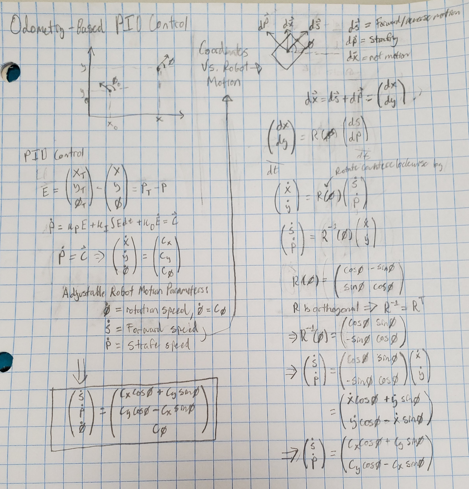Since the odometer tracks the x, y, and heading coordinates, the robot's positional error is the difference between each of these coordinates and the target. However, the robot's only options for motion are linear, perpendicular/strafing, and rotational. Rotational motion directly corresponds to changes in the robot's heading, so controlling that coordinate is straightforward. However, motion that is linear/perpendicular in reference to the robot's position has a more complex relationship with the x and y directions. More precisely, the two coordinate systems are related by the heading
Once I had the formulae (see ^!_Takeaways^!_) for controlling the robot's linear, perpendicular, and rotational speeds, I worked on adding them to the code. I started this by adding a new API v2 class, Drivetrain, which uses DcMotorXs to provide a simple API for driving the robot. I then extended it with ControlledDrivetrain, which auto-drives the robot using the PID controller and the Drivetrain.drive method (which uses linear, strafe, and yaw speed to drive the robot according to the documentation).
I then wrote a test autonomous OpMode which drives the robot from a starting position to a target and then back again. If everything works properly, the robot's final position should be almost exactly the same as where it started.
@Autonomous
public class PositionControlTest extends LinearOpMode {
ControlledDrivetrain drivetrain;
// Encoder wheel information
private double circumference = 10;
private int ticksPerRev = 280;
// Robot width and back encoder wheel ticks per degree
private double width = 30;
private int backTicksPerDegree = 1;
// Initial position
private double x0 = 0;
private double y0 = 0;
private double phi0 = 0;
// Size of a tile on the field (in cm)
private final double TILE_SIZE = 60.95;
public void runOpMode(){
// Get all of the drivetrain motors
DcMotorX mRF= new DcMotorX(hardwareMap.dcMotor.get("mRF")),
mLF = new DcMotorX(hardwareMap.dcMotor.get("mRF")),
mRB = new DcMotorX(hardwareMap.dcMotor.get("mRB")),
mLB = new DcMotorX(hardwareMap.dcMotor.get("mLB"));
// Get the odometry wheels
DcMotorX wheelR = new DcMotorX(hardwareMap.dcMotor.get("wheelR"), ticksPerRev, circumference),
wheelL = new DcMotorX(hardwareMap.dcMotor.get("wheelL"), ticksPerRev, circumference),
wheelB = new DcMotorX(hardwareMap.dcMotor.get("wheelB"), ticksPerRev, circumference);
// Create an odometry instance for the drivetrain
Odometry positionTracker = new Odometry(wheelR, wheelL, wheelB, backTicksPerDegree, 10, width, x0, y0, phi0);
// Instantiate the PID-controlled drivetrain
drivetrain = new ControlledDrivetrain(mRF, mLF, mRB, mLB, positionTracker, true);
// Run it in a separate thread
Thread drivetrainThread = new Thread(drivetrain);
waitForStart();
// Start the thread
drivetrainThread.start();
// Tell the drivetrain to actively correct position errors
drivetrain.setActive(true);
// Drive to (x=1 tile, y=3 tiles, heading=20 degrees)
drivetrain.setPosition(TILE_SIZE, TILE_SIZE*3, 20);
// Wait for the robot to get to the target position
while(!isStopRequested() && drivetrain.isBusy());
// Go back to the original position
drivetrain.setPosition(x0, y0, phi0);
// Wait for the robot to get back
while(!isStopRequested() && drivetrain.isBusy());
}
}Since the odometry wheels are not on the robot yet, I couldn't test this. However, I was able to test a simpler TeleOp OpMode that uses the Drivetrain class to drive the robot with a gamepad. This worked as expected, and with no controller delay, meaning that the DcMotorX class works to control DcMotors (note that the front left wheel was unplugged).
After working out the math, the final formula I obtained for linear (
On my asynchronous days, I will be working to finish documenting and commenting the code for all of the API's new features (DcMotorX, Drivetrain, ControlledDrivetrain, and Odometry). Once the mechanical team adds odometers to the robot, I will start testing odometry and position control.
This week, I worked on testing odometry since the mechanical team has now added pods to the robot.
The first step for testing this system was making sure that the coordinates were changing in the right direction relative to the field (if the robot faces straight ahead, moving forward should increase y, moving right should increase x, etc.) using OdometryTest. Initially, the x and y coordinates seemed to be inverted and switched, which was due to differing measurements of heading between my derivation of the odometry equations and the actual odometry system. In my derivation, I measured heading relative to the horizontal. However, since the robot usually starts facing forward, an initial heading of 0 should actually correspond to 90 degrees relative to the horizontal. Accounting for the 90 degree offset, my equations became:
After I fixed this, I had to determine the OdometryTest to record displacement in the back encoder over several driver-controlled revolutions. Recording can now be started/stopped with the x button, and the running average of displacement per full rotation can be displayed by pressing b. After performing 5 rotations and taking the average, I found this value to be approximately 41.7cm. I could then find
After I found this value, I drove the robot around the field while monitoring the position reported by the odometry system. It was mostly accurate, but I noticed that x and y values varied when I rotated the robot in place. The difference from their initial values typically hit a maximum around 180 degrees and basically disappeared by 360.
Since the differences seemed to oscillate over multiple revolutions, I suspected that
Since this seemed to prove that the back wheel wasn't causing any problems, I started looking for other possible issues. Cailean suggested that it might be due to encoder readings being absolute on one of the side wheels, which would cause measurements to vary at different parts of each wheel's rotation. To determine whether this was the case, I drove the robot in a straight line, recording the movement reported by the left back wheel's encoder as well as the odometry system's y position (which depends only on the side wheel displacements). When graphed against each other, the two measurements of positon have a linear relationship, indicating that the side encoders are in sync with the robot's actual motion.
_vs_y_(cm).png)
With all three encoders working properly, I took a closer look at my odometry code and realized that I was using a negative value for
When I ran OdometryTest after these revisions, positoning error was neglible (0-3cm for x/y, 0-2 degrees for heading) if the robot was driven around the field and back to its starting point.
The debugging process I used this week was definitely overkill for what turned out to be a minor code error, but being able to save and analyze data from the robot is very useful for diagnosing more complex issues. I had trouble working with CSVs at first due to permission issues, but after reading an Android documentation page, I found that custom files can be created/saved/accessed as follows:
File file = AppUtil.getInstance().getSettingsFile("myData.csv");Once my CSVs were saved and populated with data, I plugged the robot controller phone into my computer and downloaded them.
Now that odometry is working with minimal error, I can move on to testing the position control system.
For the past few days, I have been testing and updating the robot's PID controller.
When I first ran PositionControlTest with a working odometry system, the robot seemed to jerk around in an almost-random manner. I initially thought that this was due to complex interactions between the corrections for each coordinate, so I deactivated the controller's perpendicular and angular movements and made the testing setpoint x=0, y=3 tiles [~180cm], heading=0.
However, this did not solve my problem, and I realized that the robot wasn't going in a straight line when I called ControlledDrivetrain::drive(someLinearSpeed, 0, 0). This turned out to be a result of each wheel moving in an apparently random direction, a problem that was solved by calling ControlledDrivetrain::reverse on all motors before activating positon control (our drivetrain configuration will move in reverse if every wheel is set to the forward mode).
After fixing the driving code, I modified the position control equations to account for the heading offset I mentioned in the last entry. My end result was as follows:
Using the original setpoint and PositionControlTest again. The results were what I expected from a P controller, with a fairly slow settling time but reasonable accuracy. When I increased
After getting decent proportional control, I fiddled with
I came across Christopher Lum's video on the Ziegler-Nichols Algorithm, a simple procedure that could be used without a background in advanced math or differential equation models for the system.
I took some notes on this lecture and used the information I gathered to try using the method for the robot's position control.
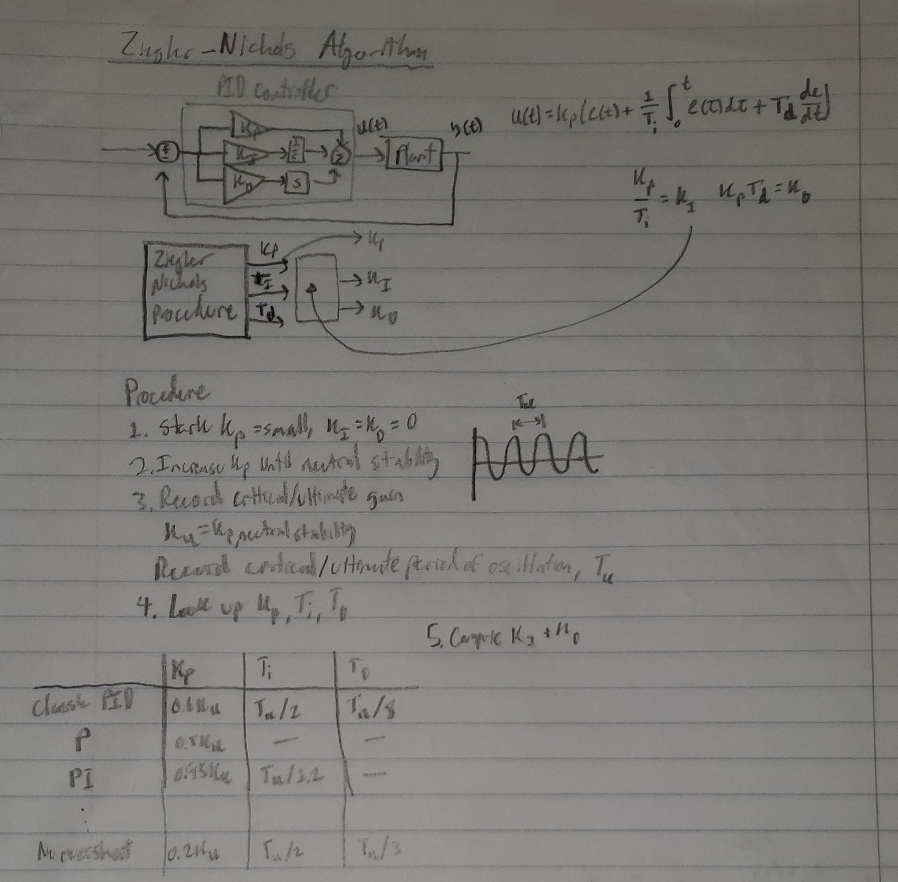According to Lum's video, I had to:
By making a setpoint that only changed the y-coordinate and using
I then tried the same for only the x-coordinate, but the robot's weight imbalance caused changes in heading that made finding an accurate
I realized that, while I would have to go back to tuning each coordinate separately, I could at least control heading by fully tuning its PID controller prior to doing the same for x. I ended up finding neutral stability and recording the ultimate parameters, but I have yet to test the values of
Next week, I will try to finish tuning the position controller and implement it in an autonomous OpMode.
On Monday, I input the tuning coefficients I calculated for heading and continued using Ziegler-Nichols to tune the x and y controllers. However, the coefficients for the heading controller seemed far too high, even when I used the "No overshoot" formulas, and I couldn't obtain stable oscillations in any direction. While I was trying to figure out where the procedure went wrong, Wolfie suggested a different tuning method that he found on WPILib's FIRST documentation site.
For this method, the steps were essentially to:
This method seemed to allow for easier tuning, since, without a graphing utility, it's hard to accurately estimate when neutral stability is reached and the period of oscillation. I made some modifications to my calibration OpMode (PositionControlCalibration, a slightly modified version of PositionControlTest) and started increasing
With the existing autonomous calibration OpMode, I had to reinstall the robot controller app every time I wanted to change coefficients, so I didn't have time to root out the jittering issue on Monday. Before I came in today, I wrote a new TeleOp mode, PIDCalibration, to change coefficients, switch between coarse/fine parameter tuning, and repeatedly test in real-time.
@TeleOp
public class PIDCalibration extends OpMode {
// Encoder wheel information
private double circumference = 15.71;
private int ticksPerRev = 8192;
// Robot width and back encoder wheel ticks per degree
private double width = 40.8;
private double backDistancePerDegree = 41.577/(2*Math.PI);
// Size of a tile on the field (in cm)
private final double TILE_SIZE = 59.69;
// Calibration parameters
private double Kp = 3.01;
private double Ki = 2e-17;
private double Kd = 0.304;
// For editing coeffients in the OpMode
private int multiplier = 0;
private int editingIdx = 0;
private String[] editingOptions = new String[]{"Kp", "Kd", "Ki"};
// Coordinate to calibrate
private PIDCalibration.CalibrationMode mode = PIDCalibration.CalibrationMode.PHI;
// Test setpoint
private double setpoint = 2*Math.PI;
// Controller for tuning
private ControlledDrivetrain drivetrain;
// Saved button states
private Robot.ButtonState lastButtons = new Robot.ButtonState();
private Robot.DpadState lastDpads = new Robot.DpadState();
public void init(){
// Get all of the drivetrain motors
DcMotorX mRF = new DcMotorX(hardwareMap.dcMotor.get("mRF")),
mLF = new DcMotorX(hardwareMap.dcMotor.get("mLF")),
mRB = new DcMotorX(hardwareMap.dcMotor.get("mRB")),
mLB = new DcMotorX(hardwareMap.dcMotor.get("mLB"));
// Get the odometry wheels
DcMotorX wheelR = new DcMotorX(hardwareMap.dcMotor.get("mRB"), ticksPerRev, circumference),
wheelL = new DcMotorX(hardwareMap.dcMotor.get("mLF"), ticksPerRev, circumference),
wheelB = new DcMotorX(hardwareMap.dcMotor.get("mRF"), ticksPerRev, circumference);
// Create an odometry instance for the drivetrain
Odometry positionTracker = new Odometry(wheelR, wheelL, wheelB, 50, backDistancePerDegree, width, 0, 0, 0);
// Instantiate the PID-controlled drivetrain
drivetrain = new ControlledDrivetrain(mRF, mLF, mRB, mLB, positionTracker);
// Reverse the drivetrain (between left/right wheels are on backward)
drivetrain.reverse();
// Adding logging to drivetrain (only needed for development)
drivetrain.telemetry = telemetry;
// Start with the drivetrain off
drivetrain.setActive(false);
// Run it on a separate thread
Thread drivetrainThread = new Thread(drivetrain);
drivetrainThread.start();
// Apply predefined settings
initializeCoefficients();
// Register setpoint with the ControlledDrivetrain
setPosition();
}
public void loop(){
// Get controller inputs
double leftX = gamepad1.left_stick_x;
double rightX = gamepad1.right_stick_x;
double rightY = -gamepad1.right_stick_y; // Reads negative from the controller
boolean dpadUp = gamepad1.dpad_up;
boolean dpadDown = gamepad1.dpad_down;
boolean dpadRight = gamepad1.dpad_right;
boolean dpadLeft = gamepad1.dpad_left;
boolean a = gamepad1.a;
boolean b = gamepad1.b;
boolean x = gamepad1.x;
boolean aHit = a && !lastButtons.a;
boolean bHit = b && !lastButtons.b;
boolean xHit = x && !lastButtons.x;
boolean dpadUpHit = dpadUp && !lastDpads.dpad_up;
boolean dpadDownHit = dpadDown && !lastDpads.dpad_down;
boolean dpadRightHit = dpadRight && !lastDpads.dpad_right;
boolean dpadLeftHit = dpadLeft && !lastDpads.dpad_left;
// Stop position control
if(bHit){
drivetrain.setActive(false);
drivetrain.stop();
}
if(drivetrain.getActive()) {
// If a test is running, log tracking information
telemetry.addData("Setpoint", setpoint);
telemetry.addData("Mode index", getModeIndex());
telemetry.addData("x", drivetrain.positionTracker.x);
telemetry.addData("y", drivetrain.positionTracker.y);
telemetry.addData("Heading", drivetrain.positionTracker.phi);
}else{
// Start/restart position control
if(aHit){
// Reset odometry and stop the drivetrain
drivetrain.positionTracker.reset();
drivetrain.stop();
// setPosition must be called repeatedly to clear the error integrals
setPosition();
// Turn the controller on to start testing
drivetrain.setActive(true);
}
// Select a coefficient to edit
if(xHit){
editingIdx = editingIdx < editingOptions.length - 1 ? editingIdx + 1 : 0;
}
// Increment selected coefficient
if(dpadUpHit) editCoefficients(Math.pow(10, multiplier));
else if(dpadDownHit) editCoefficients(-Math.pow(10, multiplier));
// Multiply increments by 10^multiplier for fine/coarse tuning
if(dpadRightHit) multiplier++;
else if(dpadLeftHit) multiplier--;
// Allow for manual driving
if(Math.abs(leftX) > .1 || Math.abs(rightX) > .1 || Math.abs(rightY) > .1){
drivetrain.driveWithGamepad(0.5, rightY, leftX, rightX);
}else{
drivetrain.stop();
}
// Log current coefficient values
telemetry.addData("Currently editing", editingOptions[editingIdx]);
telemetry.addData("Increment size", Math.pow(10, multiplier));
telemetry.addData("Kp", Kp);
telemetry.addData("Ki", Ki);
telemetry.addData("Kd", Kd);
}
// Update past controller states
lastDpads.update(dpadUp, dpadDown, dpadRight, dpadLeft);
lastButtons.update(a, b, x, false);
}
public void stop(){
drivetrain.setActive(false);
drivetrain.stop();
drivetrain.stopController();
}
private void initializeCoefficients(){
int i = getModeIndex();
drivetrain.Kp[i] = Kp;
drivetrain.Kd[i] = Kd;
drivetrain.Ki[i] = Ki;
}
private void editCoefficients(double change){
if(editingIdx == 0) Kp += change;
if(editingIdx == 1) Kd += change;
if(editingIdx == 2) Ki += change;
initializeCoefficients();
}
private void setPosition(){
// Create and register the setpoint
double[] coords = new double[]{0,0,0};
coords[getModeIndex()] = setpoint;
drivetrain.setPosition(coords);
}
private int getModeIndex(){
if(mode == PIDCalibration.CalibrationMode.X) return 0;
if(mode == PIDCalibration.CalibrationMode.Y) return 1;
if(mode == PIDCalibration.CalibrationMode.PHI) return 2;
else return -1;
}
private static enum CalibrationMode { X,Y,PHI }
}With ability to fine-tune offered by the new calibration program, I was able to use much smaller
Ultimately, these were the values I obtained for each coefficient:
I then ran PositionControlTest and directed the robot to move 3 tiles ahead and 1 tile to the right. It worked quickly and accurately, and since I cut off power once isBusy() returned false, there was basically no oscillation.
From my work with tuning coefficients today, I have learned:
Now that the position control system is finished, I'm going to write a new version of the AutonDraft mode that implements it. That work will be documented in the Autonomous wobble delivery and ring launching card.
To design and build a new intake and shooter assembly that improves on the first version in the following ways:
Initial brainstorming for the best approach for a new intake was done. We quickly decided that it would be best to have two sets of intake wheels, set up so that the rings go under the first set and over the second set, much like the set up pictured bellow.
This configuration allows the rings to be pushed up the bottom metal ramp and into the second set of wheels by the first set of wheels, without relying on the rake. Having the rings go over the second set of wheels (instead of under) allows the rings to be lifted far enough up to be dropped into a holding container without sacrificing horizontal space. After building the set up shown above (as part of our brainstorming), we decided that it would be easier to design and laser cut a custom acrylic frame to hold the two sets of wheels and ramps; a custom frame will allow us to easily mount all the components where they will work best without having to work around metal beams.
Draw the basic layout of the acrylic frame noted above, and then CAD and laser cut a prototype (out of cardboard)
Today we CADed and laser cut the first version of the intake frame out of corrugated cardboard for testing. Pictured below is the drawings we made to illustrate the basic outline of the intake, as well as the assembled cardboard frame (without the wheels).
Although the cardboard is to flimsy to mount a motor on, we were able to do preliminary testing of the design by spinning the wheels by hand. the largest issue we found was the side plates prohibiting the top ramp from getting close enough to the wheels to effectively grip a ring.
We will adjust the side plates in CAD as needed, and then laser a new prototype. The next prototype will be made out of higher quality double corrugated cardboard, which should be strong enough to hold its form better, put bearings in, and possibly mount the motor on.
We lasered the redesigned intake frame out of stronger corrugated cardboard. As previously discussed, we adjusted the top ramp clearance in the side plates. We also moved the slots (for adjustability) for the bottom ramp from the ramp attachment plates to the side plates to make for a slightly sturdier design.
We ran out of time to test the new frame, so we will continue with that next Monday
The cardboard proved to be slightly to flimsy to support the motor and chain drive, but from the few testes we were able to run before the wheel bearings started to come out of the cardboard and without the motor, the design appears to work well. Pictured is a ring being fed through the intake
We will laser at least the side plates out of acrylic so that we can mount and test the motor and chain drive more thoroughly.
Today we lasered the side plates of the intake as well as the front and back mounting plates for it, so we could continue our testing of the chain drive. We kept using the cardboard ramps as they were easier to adjust and were not necessary to have out of acrylic yet. We also moved from testing it by hand to testing it on the chassis. Since it mounts onto the middle chassis support, which we had not previously installed, we had to install it and to do so had to make so slight modifications to the bottom metal plate (cutting notches where the middle support goes):
In testing we figured out that the front of the intake needs to be raised slightly because the robot sinks into the mats of the field just slightly, making the distance between the ramp and intake wheels just barely too close. To solve this, we moved the holes to the top of the slots on the hole pattern instead of the bottom and the intake worked very well and reliably. We also bent the upper ramp slightly so it formed a continuous plate with the bottom one, which solved our bending and jamming issue with the upper two ramps. Additionally, the rings would bounce around in the holding area, causing them to get caught and not be flat. To solve this, we added an extra tall back plate and an extra angle to the upper ramps so that the rings are guided directly into the holding area.
Video of testing:
The next steps are to laser the new upper ramp plates, and to add the servo that feeds the rings into the shooter. Additionally, we need to finalize the design of the shooter assembly and laser that out of acrylic for testing as well.
Upon testing the acrylic ramps with the cardboard sleeves, we found that they worked well. The top works better with the sleeve only taped on at the bottom (it helps to direct the rings into the holding container), so we left it loose on top.
We will continue to test the design, but until we break something, we will leave the intake as it is.
Today I (Wolfie) did lots of driving testing.
The intake works quite well, even without the rake, the only thing is the first set of intake wheels need to be cleaned regularly due to the ring dust and dust and dirt from the tiles that accumulate on the sticky surface of the wheels, causing them to not intake as well, which requires the driver to wiggle the robot around, or push it against a wall or another ring or to use the rake to help it intake them.
Improve the sliding of the rings over the ramps/ guards; the main issue with the intake is friction between the rings and the ramps/guards.
To help with the friction issue, at least on the top set of guards, we removed the top section of the top guard, keeping the cardboard in place, and replaced the guard with a piece of loose surgical tubing. We then used tape to attach a small piece of bent metal to the cardboard so that it would still maintain somewhat of a curved shape.
This allows the ring to go past the top set of wheels without as much bending (the surgical tubing can stretch) while still being directed back down into the holding container after they have passed the top wheels (when the surgical tubing retracts back to it loose state) by the cardboard, which maintains the proper curve via the metal support.
It would be nice to implement a version of the above concept that doesn't rely so much on tape and card board, but for now it is working, and the priority is to eliminate friction between the rings and the bottom ramp.
Since there isn't a was to decrease the amount the rings are bending on the lower ramp (short of a complete redesign of the intake), we decided to replace the bottom ramp with a set of non driven rollers. There is still a short ramp above the rollers allowing the rings to be cleanly delivered to the top wheels, and the metal bottom is still used to "scrape" the rings off the ground.
We also added slots in the metal bottom plate so that it could be moved front to back to more precise positions:
These rollers spin when the rings pass over them, allowing the rings to be fed to the upper set of wheels much easier then a ramp. Fortunately the intake was designed in a way that allowed just the bottom ramp to be replaced without changing the rest of the intake. The top ramp section, which is made of acrylic, still presented some friction, but we found that sanding it greatly helped. Over all, the rollers are a large improvement over the ramp. Being able to fine tune the position of the bottom metal ramp also improved performance, although not as noticeably.
We will continue testing the intake, along with the rest of the bot, but for the moment, until we find another problem with the intake, this project will be moved to done.
The top flap of cardboard was replaced with a curved piece of sheet metal, as it was wearing out and required very precise adjustments of the elastic strap (which keeps pressure on the rings) to correctly deliver the rings, as it would bend as the rings passed under it.
We also put the bottom metal plate on hinges, so that it rests on the ground and can move up and down with small variations in the field, for example where the wall straps pass under the tiles. Since the back half of the plate had already been cut off to make room for the middle odometry pod, adding minges was not very hard; we just punched two new holes in the metal, bent the sides in (so they wouldn't rub on the chassis where they used to attach), and used actobotics hardware to attach it to the middle chassis support beam:
The metal keeps it's shape much better then the cardboard, and after a little experimentation with how it is bent, proved to be much more consistent in how it effected the delivery of the rings. Unfortunately, it cannot just ride lightly on top of the top wheels as the cardboard did; due to how the metal is shaped and where the pivot point is, if it comes into contact with the top wheels, the friction is great enough to stall the entire intake. As a temporary fix, we secured a piece of paper between the front of the intake and the metal. As it worked quite well, and we didn't have any other ideas that would as simple to implement, we stuck with it, replacing the paper with a thicker piece of sticker backing. Having the bottom metal ramp ride on the ground also helped a lot. Previously, we would sometimes encounter a problem where the rings would briefly get stuck on the bottom of the metal ramp, but adding the hinge on the ramp has solved this problem.
Until we find another problem with the intake (or think of a way to improve it), it will be considered done.
To redesign the shooter frame (which is also the holding container) to work with the new intake (Intake V2). The basic layout of the fist shooter will be carried over from the original shooter, but the frame will have to be made narrower to connect to the new intake.
We lasered out a prototype for the new shooter assembly, which was designed in CAD to connect to the V2 intake:
As can be seen, since the motor and wheel had to extend outside the assembly, two smaller beams which pass over and under the shooter wheel were used. The servo used to push the rings from the holding container into the shooter was also moved to the front of the holding container where it could be placed with out interfering with the intake. placing the servo in the front (instead of the side) should also allow it to move less to get the rings into the shooter, which means it will be able to shoot faster. We decided to assemble it with the shooter motor on the opposite side of where it is in CAD, in order to keep it consistent with the previous shooter.
The assembly proved to be very sturdy, even out of cardboard. pushing rings through it by hand it appears it should work well, although we did not get to mount it to the intake yet.
Mount the shooter assembly to the intake, and test that the intake is able to deliver rings into the holding container and that it can then shoot the rings accurately
Today we mounted the cardboard shooter assembly to the V2 intake, and tested that rings could be reliably delivered into the holding container
As can be seen in the bellow video, the shooter assembly was able to attach and work with the V2 intake as expected. Unfortunately we ran out of time to test the actual shooting.
The next steps are to mount the servo to push the rings into the shooter and test the shooting reliability and accuracy. Then the entire shooter assembly, with the V2 intake, will be tested on the field.
We mounted the servo to the shooter, which is used to push the rings into the shooter. The servo is located under the intake, so we weren't able to get any good pictures of it, however it can be seen in a cross section of the CAD model:
Upon testing, it appears the shooter will function as expected; the servo is able to push the rings into the shooter, where the wheel is able to accurately launch them.
Test the design in the field, with the bot being driven. If it continues to work as expected, all the plates will be lasered out of acrylic, except for the top and bottom plates of the shooting chamber, which will remain cardboard to keep the friction against the rings lower.
Yesterday further testing of the V2 intake and shooter was done. The plates for the shooter were cut out of acrylic.
The shooter was found to work well
The acrylic version of the shooter needs to be assembled and then mounted to the bot.
Testing of the shooter was done while the bot was being driven. Also, the acrylic version of the shooter and holding area was almost completely assembled, but there just need to be a couple more tapped holes and then it will be done.
During testing I (Wolfie) found that the shooter is mostly reliable but the spot of the robot matters much more than with the previous version. This may be due to the fact that the angle of the previous shooter was very hard to match in building this version. We are using the same upright beams to mount it and adjust the angle, but they don't line up as nicely. The acrylic version should be able to fix some of those issues, as the current version is made out of cardboard, which may have also added to the different angle and the sagginess of it.
Finish assembling the acrylic shooter and mount it on the bot.
The acrylic shooter assembly was finished and mounted to the bot. It is pictured bellow before the servo was mounted:
The acrylic shooter appears to work, but after formally testing the distance it is capable of shooting the rings, we confirmed that we will have to adjust it to comply with the maximum shooting distance rule, as it currently shoots around 25ft.
Adjust the shooter so that it can not shoot further than 16ft in order to comply with the FTC game rules
We tried simply lowering the velocity of the shooter wheel and increasing the angle in order to comply with the 16ft max shooting distance while still being able to shoot into the high goal, but found that we had to lower the velocity to around 45%, at which point the motor controller was able to maintain a constant velocity for the wheel, making the shooting inconsistent. We then realized that using a smaller diameter wheel might allow us to over come these problems, so we switched the 4in green compliant wheel for a 3" green compliant wheel. The switch allowed us to run the motor at around 70% velocity, where the controller was able to maintain a consistent speed, without shooting over the 16ft max distance and while still being able to hit the top tower goal.
The rev expansion hub is not able to maintain a constant velocity for a wheel with a moment of inertia as large as the 4" green compliant wheel when only spinning it at 45% velocity (through a 1:1 motor). A simple fix to this problem is moving to a wheel with 1) a lower moment of inertia, which allows for lower energy consumption when accelerating, and 2) with a smaller radius, resulting in a similar tangential velocity as a wheel with a larger radius spinning at a lower speed, allowing for the an increase in radial velocity without altering the tangential velocity.
As can be seen above, the shooter structure had be be modified to work with a smaller wheel. These changes need to be implemented in a more permanent, structurally secure, way.
Over the weekend I (Cailean) redesigned the shooter assembly to reflect the changes we made in order to work with the smaller shooter wheel. Today we lasered out the new plates, which create a gap in the motor side top support beam so that the motor can move closer to the shooting track.
I was worried about removing the support beam above the shooting wheel, but the new design appears to still have planty of strength.
The shooter will need to continue to be tested in conjunction with the rest of the bot.
For the moment, the design, pictured bellow, will be considered done.
After a week + of testing, the shooter assembly appears to be holding up, and no changes to the design are foreseen, unless another part of the bot changes.
The servo that pushes the rings into the shooter wheel was moved from the front side of the holding container to the left side. The primary reason for doing this was to make removal of the shooter assembly easier; with the previous servo servo placement, the shooter assembly had to be tilted down to horizontal so that the servo could pass around the top intake wheels. This did not used to be a problem, but the new side plates (specifically the back plate) doesn't allow this movement, so it has to be removed to take shooter out. A new arm was also put on the servo which curves around the holding container sides. Thick wire was used to make the arm, as that was what was available and could easily be bent to the needed shape.
Mounting the servo on the side allows the shooter to be taken off without taking anything else apart. The new placement also allows a slightly smaller movement of the servo to bring the ring into contact with the shooter wheel (~30deg vs ~40deg), which makes for faster shooting. Additionally, the new arm geometry has eliminated a problem where a ring could get stuck behind the arm, preventing it from returning to the retracted position.
The wire used for the new arm is slightly to bendable for comfort, so I will double or possibly triple it (an acrylic arm can not be used as the arm has to be slim to fit next to the rings in the holding container).
Create a simple, reliable, and fast way to get rings into the robot by using a rake mechanism
Today the idea of an intake rake, from the very first design meeting was revisited, and I built an intake rake, based on sketches from Cailean, out of x-rail and cardboard. I mounted a u channel on top of the x rail to allow collars to be screwed into it to provide support for the 6mm d-shaft rods used for the structure. Having x-rail on only one side allows for the design to be simple as well as to be easily driven fast. The cardboard was supported on the top and front, such that it would all move as one piece, and be strong while still being very slim and made of cardboard.
Sketch from beginning of year (9/15/2020):
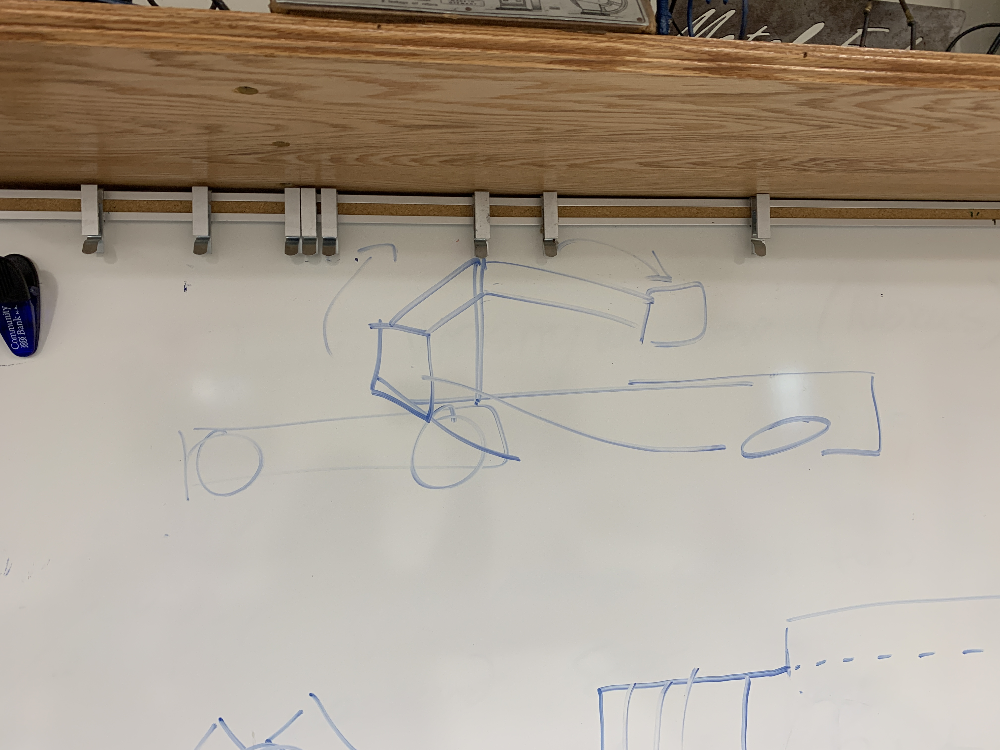Cailean's sketch (10/26/2020):
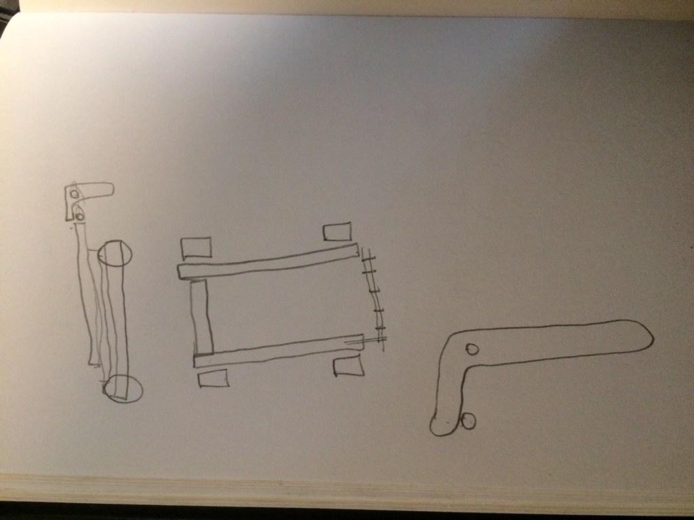We found the design to be promising, and will continue to work on refining it.
Prototyping and Testing:
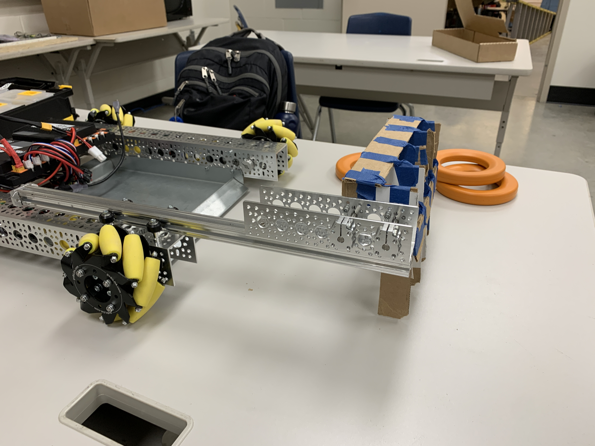 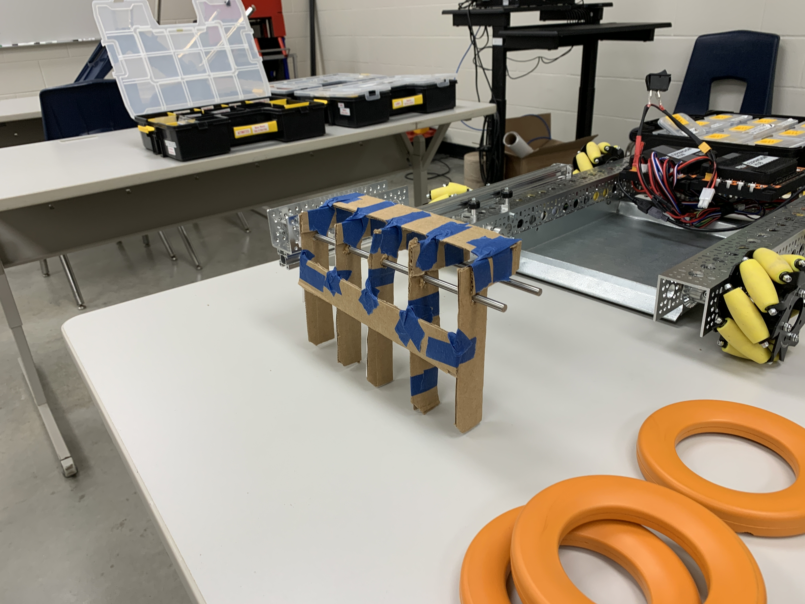 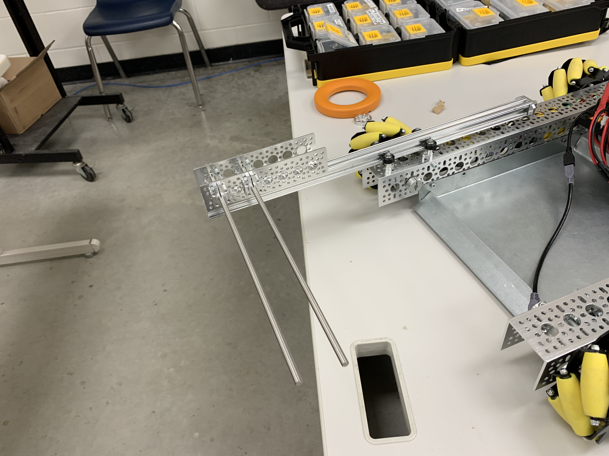Cut the tines out of acrylic and animate the assembly, which Cailean is designing a pulley system for. The goal is to incorporate a clutch system or other way for it to slip if it goes too far, to prevent mechanical breakages on a system that is moving quite rapidly. Also walls will be added to the sides of the rake, so that if we grab a ring, we can be moving the robot as we intake it, without losing control of the ring.
Cailean's clutch wheel system was added and tested. It is run by the 90 degree motor mount I made very early in the year and works well. The cabled running it were tightened and a second slide was attached to give the rake more reach.
However it is attached in a pretty sketchy way, so I will laser out a plate to mount it in a more sturdy way.
Today I lasered out a plate for the motor to be mounted on the side of the robot so it will be more sturdy. It was counter bored on one side and had a place for cap nuts lasered into the other side. More refinement on the cable system was done as well.
The piece fit and was much stronger than the previous mount and will be very helpful in the rigidity and functionality of the mechanism as the rake moves at high speeds and wobbling parts can lead to failure of parts.
Next steps for this are to improve the rake's movement and make it smoother as well as remove the tolerances in the x rail wheel brackets by lasering a new replacement plate.
Today I designed and lasered new brackets for the x rail slider wheels to remove the tolerances on the original parts that caused the whole system to sag and wobble.
Takeaways
It worked very well and allows the rake to move much more smoothly and wobble a lot oless especially at full extension.
Next steps are to finish assembly of this design with Lindsay's help, and Cailean is going to do a demo on the string tensioning so we all know how to tighten it when it undoubtedly loosens up again.
Today with the help of Lindsay, we took apart, upgraded and reassembled the rake intake so now it works better and the strings are tighter due to new pieces being designed and lasered to hold the wire on either end. The new ones use metal pieces that mount to the end of the x-rail and then lasered plates attached to one side that clamp onto the wire to hold the ends.
The upgraded wire system allows the rake to move better, and the wire doesn't get caught or pinched anywhere anymore.
Next steps are to mount the intake assembly onto the robot so we can start driving practice and other testing of the system.
I (Cailean) put on a new set of rake forks and cross bar, with a new back stop rod placement. The new forks should improve the performance of the rake in two locations; first the new back stop rod placement allows the forks to be folded up on top of the intake mechanism to start, allowing more room for the intake without exceeding the 18" length limit. Second, the spacing of the forks and the deeper side forks should auto center the rings and help to only intake one ring at a time, both of which will help to avoid intake jams. I didn't have any acrylic glue available when I assembled it, so tape was used instead.
I also added a string tensioner to the drive cable, in order to decrease the pully slipping. Since it is only a prototype, I reused a piece of broken acrylic which already had the correct holes. It does not fit within 18", but a finished piece with the same functionality can.
The new rake does not work as well as hoped, but is defiantly an improvement. it does auto center, but if two rings are directly side by side, they will still jam against the bot frame. The string tensioner works well, although there is still a lot of friction where the main out cable wraps around the wheel post.
A pulley will be added for the main out cable, to decrease friction. The rake will eventually need to be glued
We added a pulley for the main out string to decrease friction. This helped increase the rake out speed A LOT.
There was much more friction than we thought between the main out string and the wheel post it was curved around. Adding a pully for this direction change eliminated this friction.
Today there was the idea of a stop that would hold the rake from coming all the way in after the match has started, as to not break or jam components. To solve this, I (Wolfie) sketched out the idea of a simple spring loaded lever, that once the rake goes out the first time, it slides down and prevents the rake from coming all the way back in.
A very simple part like this scan greatly improve the functionality of the much larger system by reducing unwanted motion.
More testing on the stop could be done, but for the moment, I think it will stay as is, unless it breaks, or the rake is changed.
Today we worked on more testing of the rake and lasered out a new design that will allow any stacked rings to pass through it, allowing it to work better with the new intake, which has a front plate that will block stacked rings from going in. Pictured is the drawings of the rake design.
The new rake design seems to work as intended, as can be seen in the video below
Next steps are to redesign the rake to fit more of this criteria.
Next steps are to assemble it on the actual robot and do lots of testing to make sure it doesn't jam and works well in many circumstances, and is strong.
Next steps are more testing through more driving practice, but other than that, for the moment the design is finalized temporarily.
Develop an effective way to lift the wobble goal
Developed a pitchfork design to pick up the wobble goal via rotation. The design worked however there were some seemingly major flaws in it being that the prongs were too slippery making it hard to grip onto the wobble goal and that the 2” distance between the prongs allowed space for the wobble goal to roll out. This also meant more force was needed to lift up the wobble goal without it falling out.
When the prongs are stationed 2 inches apart the degree of motion needed to lift the goal is 135° while when they are distanced at 0.8 inches apart the wobble could be picked up at only 110°. Adding surgical tubing can increase the grip strength of the prongs. Decreasing the prong distance between each other minimized the possibility of the wobble goals rolling out.
Creating a possible square shaped handle to pick up the wobble goals rather than prongs to test if using squares with a greater width could prove more advantageous than using prongs with a smaller grabbing size.
Learned the usage of button top screws to augment the utility of the funnel. Rather than using other shaped screws the button screws offers for a slippery surface that allows simple passage into the funnel.
Think of methods to lift the wobble goal pickup and attaching it onto the main body. We also have the objective in mind to fix the problem of the wobble pickup being able to grab the wobble goal but is unable to release it. Thoughts - Moving pad location Spreading out the funnel move funnel to where pads are currently located and move the pads higher Multiple padded areas and open areas to fall out
goBuilda and actobotics need acrylic adapters to be compatable.
Design adapters for REV robotics core hex motors and lazer them out. Then mount the motors inside the goBuilda U channel.2

Olaf and Cailean had a discussion about how different ways of rotation could be used to pick up the wobble goal. They drew many pictures showing their thinking on the subject.
The biggest takeaway from these sketches was that there are many different ways to pick up the wobble goal effectively. They debated which direction was best for the rotation, eventually deciding on the concept of a claw perpendicular to a rotating arm.
It was decided the best way to pick up the wobble goal was with a vertical rotation of a metal beam. That way the wobble goal can be more easily lifted over the wall. A prototype will now have to be built.
 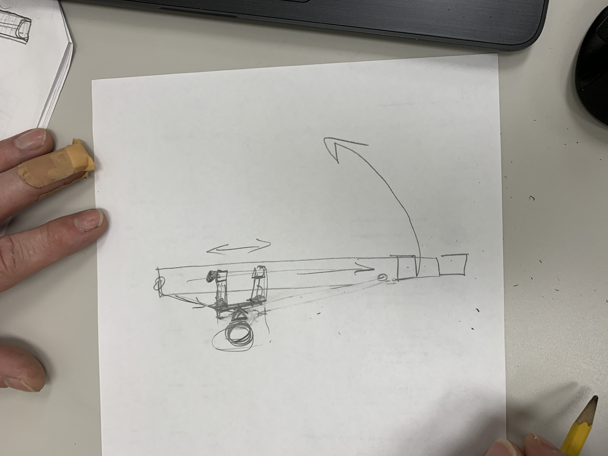
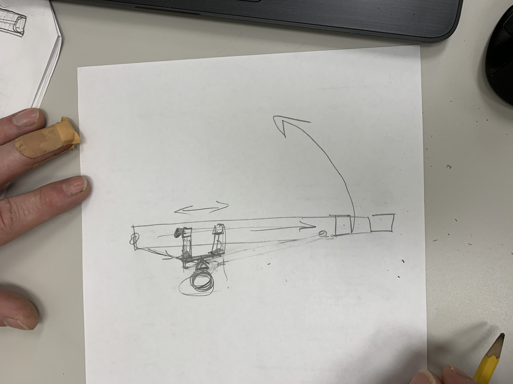
(Cohort 2) Sam, Jared, and Javante mounted the bracket that they created for homework to the goBuilda beam. We then mounted the core hex motor to the bracket. We had to use 6-32 bolts instead of the metric bolts though because we did not have nuts for the metric bolts. We then mounted the wobble pick up design to a hex shaft that we cut to fit the arm. On Friday we finished putting the arm together, and we got code from Isaac. We then figured out how to mount the arm to the robot and started testing.
The current code is a good speed to move the arm, but does not have enough power to lift the wobble goal by itself. We also have to turn the robot the right direction once we have the wobble goal over the wall to cause it to roll out of the wobble goal pick up design.
We are going to design and prototype either a counter weight or use surgical tubing to aide the arm in picking up the wobble goal. If we have time we will also do more testing and driving practice.
(Lindsay) Changing the material used for the wobble, using bent acrylic for more precise fit. The acrylic piece will move towards the end of the bar more and either add a counterweight or cut bar to compensate. The dimensions of the acrylic piece are shown below, they will have a base dimension of 30mm(L)x38mm(H) and the sides will have dimensions of 37mm(L)x38mm(H). We will be using 1/16 inch acrylic for testing and can move to thicker material if needed. The acrylic plate should be bent at 90 degrees on both sides and mounted to the bar with two screws. The third and fourth images show the cardboard prototype. The goal is to have a snug fit surrounding the wobble goal and prevent unnecessary extra space. The second image shows the piece when attached to the bar, we are contemplating switching the u-channel for a flat bar, but we are testing both. The bar did not have bearings, so we removed it to put them in.
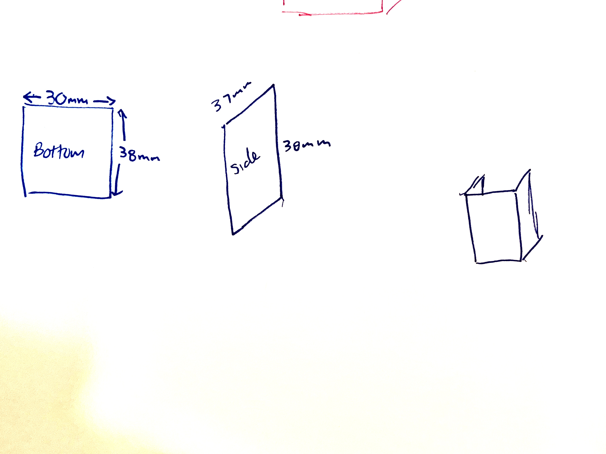Shows dimensions for the wobble pickup piece
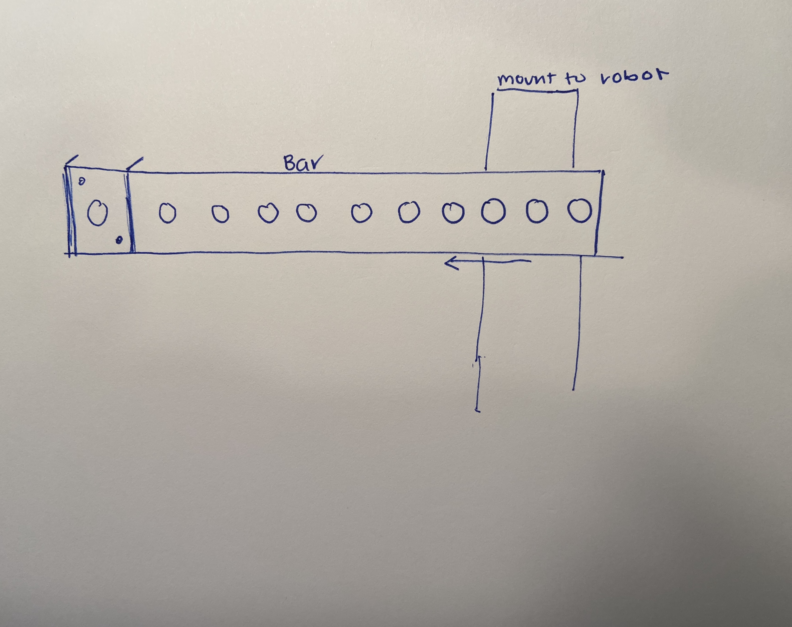We are adjusting the intersection of the pick-up bar and the robot mounting bar
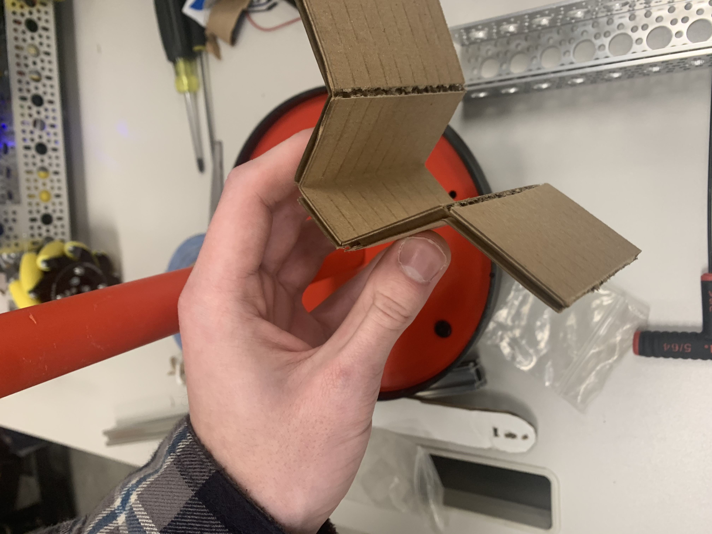Prototype of the piece that will fit on the robot
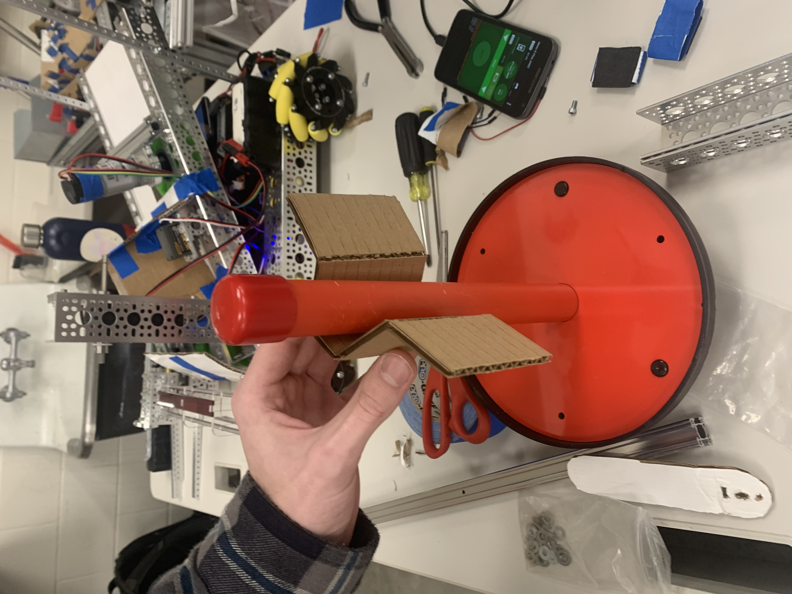Showing the prototype in use to pick up the wobble goal effectively
Our next steps are creating the acrylic piece using the dimensions from image one, mounting the piece to the bar (testing both u-channel and flat bar), and testing the function of the new design. The goal is to be able to easily pick up and release the wobble goal. The next steps also include adjusting the distance between the motor on the robot and the end of the bar (picture two). Testing should be completed to find the best solutions for picking up the wobble goal.
Jared designed a new CAD model and drawings of a new prototype for the wobble pick up. The CAD model is in the Onshape shared drive. This new model includes a wider funnel that brings the wobble goal into a half circle that perfectly holds the wobble goal in place. There will also be a bottom piece that will help add more leverage to make it easier to pick up. The top piece was cut out of 3/16 acrylic and tested.
The wider funnel more easily brings the wobble goal to the correct position. Having the design be circular instead of square makes it easier to manipulate the wobble goal. The top piece can pick up the wobble on it's own, but the bottom piece will make it substantially easier.
The top piece needs some adjustments to sizes, and the bottom piece needs to be either 3d printed or bent out of acrylic. The arm might need to be adjusted so both pieces can be mounted correctly.
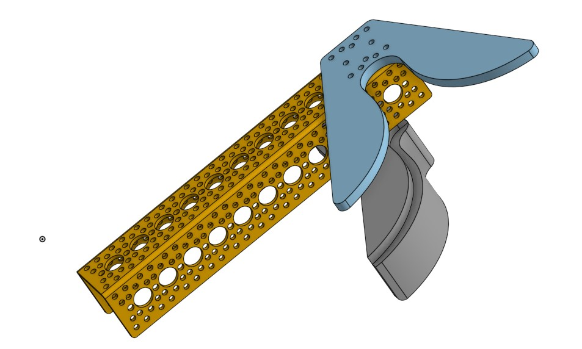 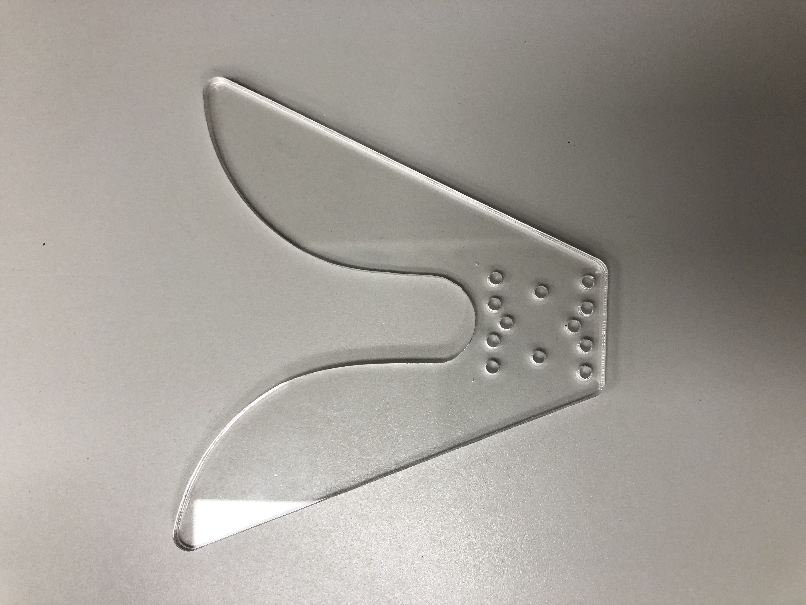(Eva) The laser cutter was broken so I make an adapted pick up with the same design that I was going to implement with the bending of acrylic for the pick up. I shimmed a one block u-channel piece with cardboard and tested it. It worked well at first but the cardboard quickly degraded. So we were at a stuck point until the laser was fixed. When we came back to school cohort 2 had made a design that did not require any any bending and when we tried it out it worked well. However it broke due to having to many stress points due to cohort 2 lasering out the entire hole pattern which is not necessary. We then cut out their design but the slot was off centered and two big because this one was not the same design because the first design that broke was filed down after being to small. I like their design because it would be easier to make them all uniform and reproduce them quickly. We were also having difficulty with the arm staying stable when picking up the wobble. We decided that gears would help with stabilization and accuracy of the arm. I CADed a plate that would hold the gears and motors in place. I messed up on my hole placement and size so I had to drill out the holes however the gears were still placed to far away from each other.
I improved my CAD skills and made a somewhat functional plate even if though some improvements can be made.
Create a new plate and assemble with new gears that are less worn out and a plate with the correct demetions. Also allow cohort two to work on there design for the end of the wobble pick up. We also need to work on the height and length of posts and how we are mounting it.
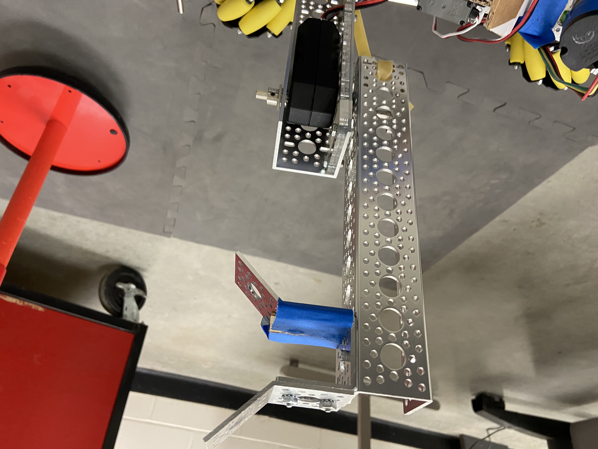(Eva) The new gear plate was made and cut out yesterday. I assembled the gears on the u-channel with the new plate. I also cut down the D shaft so it wouldn't be sticking out and interfering with other mechanisms on the robot. I also attached a go-builda u channel on top of the chassis so we have more flexibility with mounting the wobble pick up. We mounted the the arm onto the bot and tested it.
When we tested the pick up it did not work the print is does not work as planned.
Would be talking to cohort two and making a solid plan with what we are doing next. Figuring out how to best support the wobble pick up.
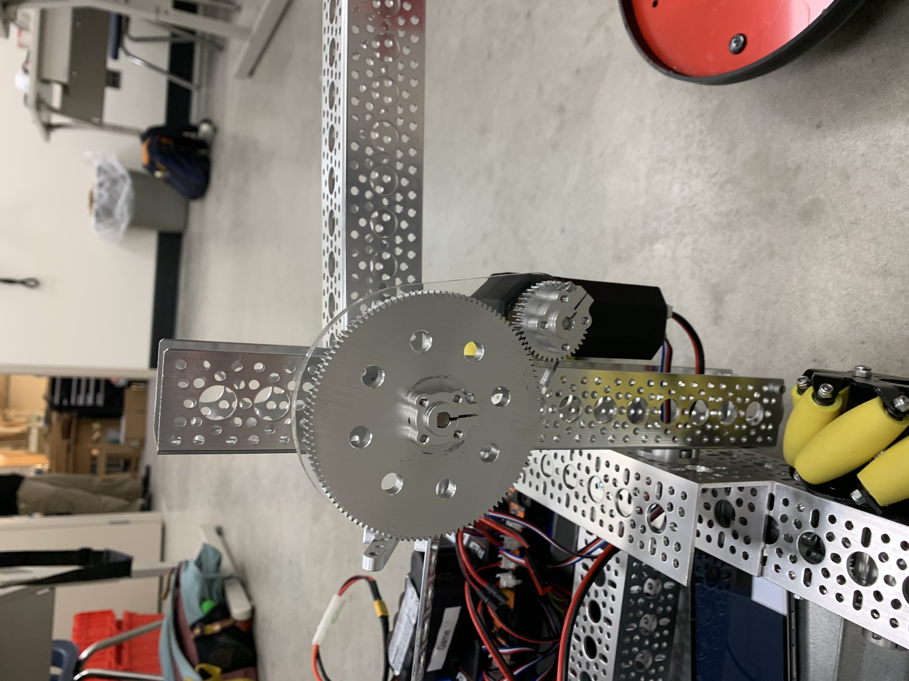 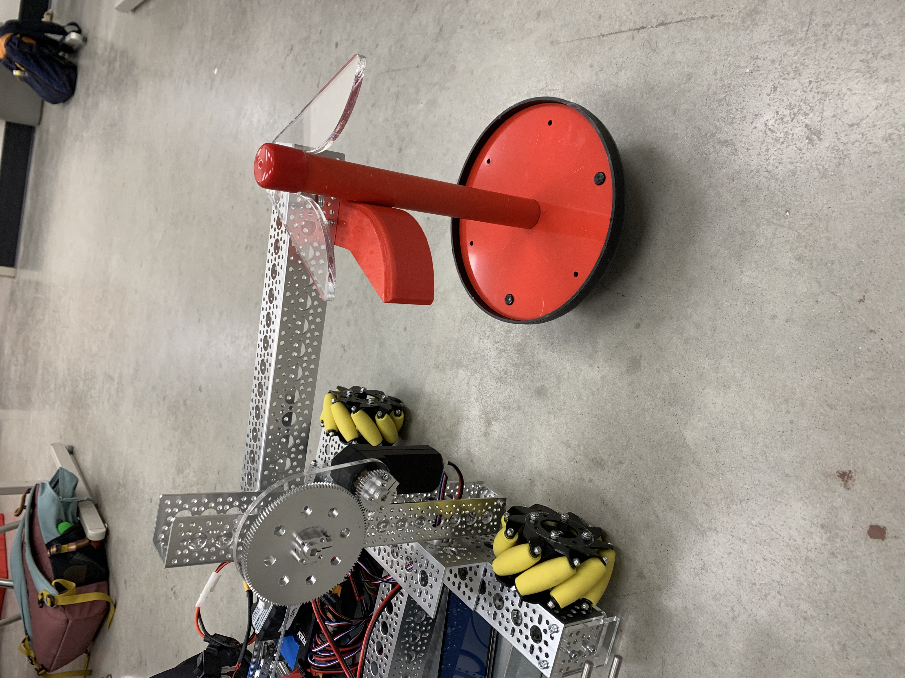 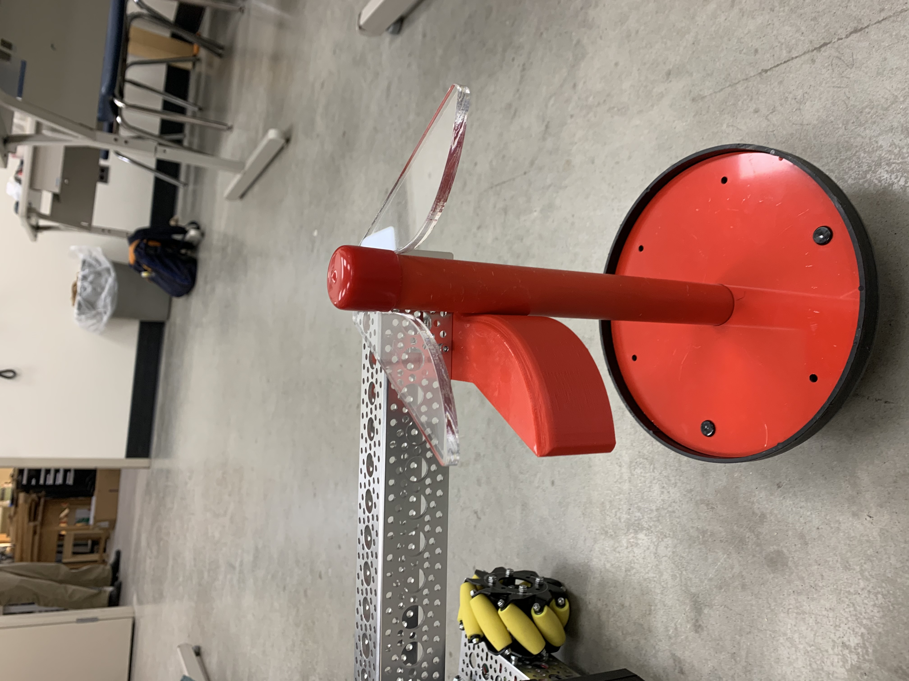(Lindsay) We made adjustments to the gears, switched them out for ones that fit together better, replaced the gear plate with one that was the correct size and alignment. I also lasered out a prototype of a different mechanism with a mount to fit inside the U-channel. This design didn't work but the CAD files can be found in Drive. Eva and I completed testing using the new design and found inconsistent results.
It is important to test multiple designs even if some are outside the box. With a gear plate it is very important that the measurements are accurate to ensure that the gears work together properly.
Our next step is to finalize a design that works consistently and potentially incorporate other mechanisms to support the wobble beam.
(Jared) I changed the tape on the wobble pick up that was supporting the surgical tubing. I drilled four holes in the wobble pick up plate and tied the surgical tubing in a know at one end. I then slid the surgical tubing through all four holes on the plate.
I learned that this was a really easy but effective way to securely hold the surgical tubing, and it can now be easily adjusted, removed, or replaced.
Next Steps
My next steps are to see if I can place a limit switch some where on the wobble pick up plate to sense the wobble goal and automatically close the claw.
.jpeg) 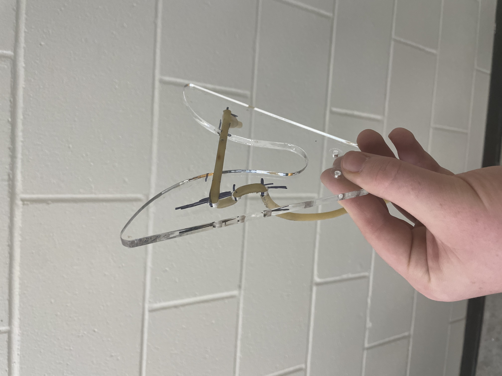
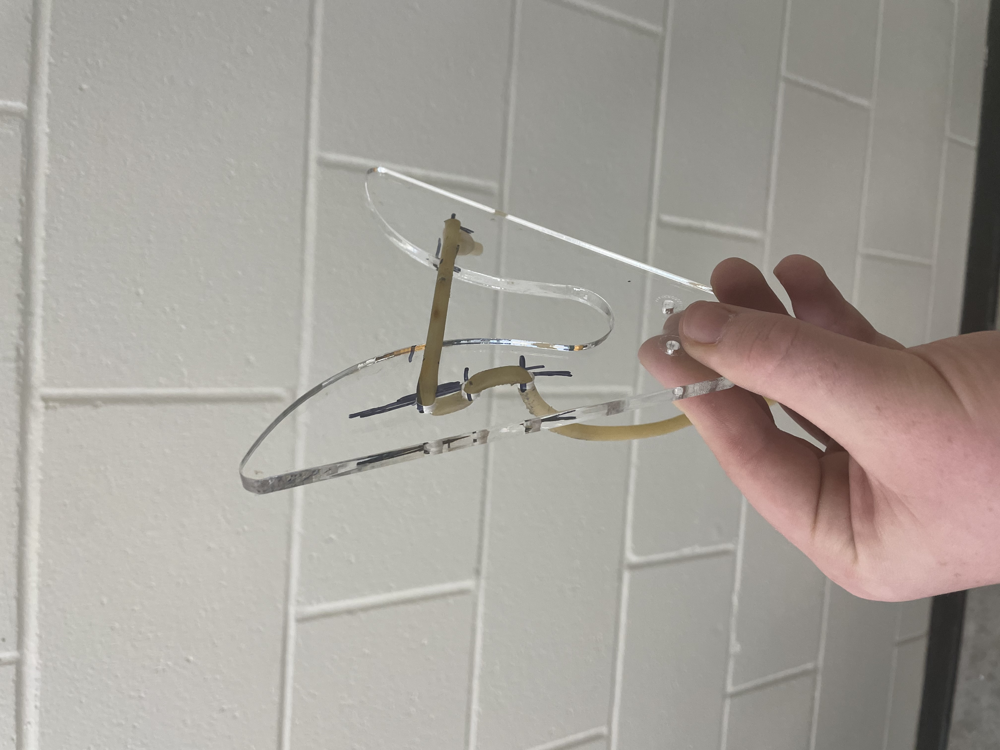
(Jared) After a team discussion we have decided that the limit switch on the wobble goal pick up would cause more problems then it would help. We have also decided to change our game plan, so the wobble goal would no longer be interacted with as much. Due to these decisions, we decided to finish testing and designing the wobble goal.